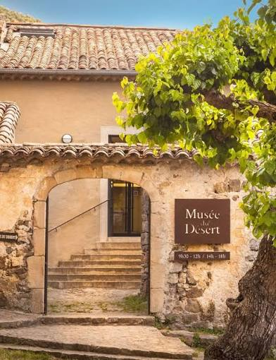

Musée du
Désert


⟹ Mémoire camisarde ⟸
Un haut lieu de mémoire protestante. Le Musée du Désert est installé au Mas Soubeyran, hameau de la commune de Mialet, au cœur des Cévennes gardoises. Il occupe la maison natale de Pierre Laporte, dit Rolland, l’un des principaux chefs camisards. Le lieu était déjà identifié comme un espace de mémoire protestante avant la création du musée.
Pourquoi « le Désert ». Le mot désigne la période qui va de la révocation de l’édit de Nantes, en 1685, à l’édit de Tolérance de 1787. Privés de temples et de pasteurs, les protestants français se réfèrent alors à la traversée du désert du peuple hébreu : comme lui, ils vivent leur foi dans l’épreuve, en attendant des temps meilleurs.
La Réforme gagne les Cévennes. Dès les années 1530-1560, les idées de la Réforme se diffusent dans les Cévennes par les marchands, les artisans et les prédicateurs formés à Genève. En quelques décennies, la majorité de la population des vallées adhère à la foi réformée. L’édit de Nantes, signé par Henri IV en 1598, reconnaît aux protestants la liberté de culte dans des lieux déterminés et leur accorde des places de sûreté.

Les dragonnades et la Révocation. Dès les années 1680, les dragonnades, qui consistent à loger des soldats chez les protestants pour les pousser à abjurer, provoquent des conversions massives. En octobre 1685, l’édit de Fontainebleau révoque l’édit de Nantes : les temples sont démolis, les pasteurs expulsés et l’exercice du culte réformé interdit.
L’exil des huguenots. Malgré l’interdiction de quitter le royaume, sous peine des galères pour les hommes et de la prison pour les femmes, on estime que 150 000 à 200 000 protestants s’exilent vers la Suisse, les Provinces-Unies, le Brandebourg-Prusse ou l’Angleterre. Ce « Refuge » prive la France de nombreux artisans, négociants et soldats, et donne naissance à une diaspora huguenote qui garde longtemps la mémoire de ses origines.
Un culte clandestin. Les réformés restés fidèles se réunissent en secret dans des « assemblées du Désert », tenues la nuit dans des bois, des combes ou des grottes. Les participants s’exposent à de lourdes peines : les hommes risquent les galères, les femmes la prison, et les prédicateurs la mort.
Les prophètes des Cévennes. À la fin des années 1680, dans un contexte de persécution et d’absence de pasteurs, apparaissent des « inspirés » : hommes, femmes et parfois enfants qui, en transe, prophétisent la délivrance prochaine et appellent à la repentance. Ce prophétisme, inquiétant pour les autorités, nourrit la ferveur qui débouchera sur la révolte armée.
La guerre des Camisards. En juillet 1702, l’assassinat de l’abbé du Chayla au Pont-de-Montvert déclenche la révolte des Camisards, paysans et artisans cévenols qui prennent les armes contre les troupes royales. Pendant deux ans, ils mènent une guérilla redoutable, à l’aide de leur parfaite connaissance du terrain.
Pourquoi « Camisards » ? L’origine du nom reste discutée. On le rattache le plus souvent à la « camise », la chemise en occitan, que les insurgés auraient portée par-dessus leurs vêtements pour se reconnaître lors des attaques nocturnes, ou aux « camisades », ces coups de main menés de nuit. Les révoltés, eux, se désignaient plutôt comme les « enfants de Dieu ».
Le « grand brûlement » de 1703. Face à une guérilla insaisissable, le maréchal de Montrevel décide à l’automne 1703 de faire le vide dans les hautes Cévennes : plusieurs centaines de hameaux sont incendiés et leurs habitants déplacés. Cette politique de terre brûlée laisse une trace profonde dans la mémoire cévenole.
Rolland, enfant du Mas Soubeyran. Né vers 1680 dans la maison qui abrite aujourd’hui le musée, Pierre Laporte, dit Rolland, devient l’un des chefs les plus déterminés de la révolte. Contrairement à Jean Cavalier, qui négocie avec le maréchal de Villars en 1704, il refuse de se soumettre. Trahi, il est tué en août 1704 près de Castelnau-Valence ; son corps est ensuite exposé et brûlé à Nîmes.
Jean Cavalier, l’autre chef. Jeune garçon boulanger originaire de Ribaute, Jean Cavalier devient l’autre grande figure de l’insurrection. En mai 1704, il négocie sa reddition avec le maréchal de Villars, ce qui lui vaut la méfiance d’une partie des Camisards. Passé ensuite au service de l’Angleterre, il termine sa carrière comme lieutenant-gouverneur de l’île de Jersey et meurt en 1740 près de Londres.
La naissance du musée. En 1911, Frank Puaux et Edmond Hugues, liés à la Société de l’histoire du protestantisme français, décident de faire revivre le Mas Soubeyran en créant un musée consacré à l’histoire des protestants français et à la période du Désert. La même année, le 24 septembre, se tient la première Assemblée du Désert.
La maison de Rolland. La visite commence dans les pièces de l’ancienne maison cévenole, qui ont conservé leur atmosphère rurale : la cuisine, la chambre et la cache où, selon la tradition, se dissimulaient les fugitifs. Le visiteur y découvre le cadre de vie des familles protestantes des Cévennes au début du XVIIIe siècle.
Les objets d’une foi cachée. Les collections rassemblent des témoignages émouvants de la clandestinité : petites « bibles de chignon » que les femmes dissimulaient dans leur coiffure, chaires démontables que l’on pouvait cacher rapidement, méreaux servant de jetons pour accéder à la communion, lanternes, psautiers et coupes de communion.
La salle des galériens. Une salle rend hommage aux protestants condamnés aux galères pour avoir tenté de fuir le royaume ou participé à des assemblées. Les noms de ces condamnés y sont inscrits sur les murs, rappelant qu’ils furent plus d’un millier à subir cette peine.
Les femmes prisonnières. Le musée évoque aussi le sort des femmes enfermées pour leur foi, notamment dans la tour de Constance à Aigues-Mortes, où Marie Durand resta captive de 1730 à 1768. Leur résistance silencieuse est devenue l’un des symboles de la mémoire protestante.
Les pasteurs du Désert. Après la défaite des Camisards, Antoine Court réorganise les Églises réformées à partir du synode de 1715, puis Paul Rabaut devient l’une des grandes figures du protestantisme languedocien. Plusieurs pasteurs sont arrêtés et exécutés, comme Claude Brousson en 1698 ou François Rochette en 1762. Le musée présente leurs portraits, leurs écrits et leurs parcours.
L’affaire Calas. En 1762, à Toulouse, le négociant protestant Jean Calas est accusé d’avoir tué son fils pour l’empêcher de se convertir et il est exécuté. Voltaire s’empare de l’affaire et publie son Traité sur la tolérance. La réhabilitation de Calas en 1765 fait évoluer l’opinion et prépare l’édit de Tolérance de 1787.
De la tolérance à la liberté. L’édit de Tolérance de 1787 rend un état civil aux protestants, puis la Révolution leur accorde la liberté de conscience et de culte. Le parcours se termine sur cette longue sortie de la clandestinité, qui permet la reconstruction des temples au XIXe siècle.
L’Assemblée du Désert. Chaque année, le premier dimanche de septembre, plusieurs milliers de personnes se rassemblent en plein air autour du Mas Soubeyran pour l’Assemblée du Désert. Culte, prédications et conférences historiques y perpétuent la mémoire des protestants cévenols et de leurs ancêtres.
La Société de l’histoire du protestantisme français. Fondée en 1852, cette société savante rassemble archives, livres et objets relatifs à l’histoire des protestants de France. Le Musée du Désert, créé par des membres de la Société, reste étroitement lié à elle et participe à son travail de conservation et de recherche.
Sur les pas des huguenots. Le Mas Soubeyran s’inscrit aujourd’hui dans un réseau de lieux de mémoire protestante : temples cévenols, tour de Constance à Aigues-Mortes, maisons natales de pasteurs, lieux d’assemblées clandestines. Le chemin de randonnée « Sur les pas des Huguenots », reconnu itinéraire culturel du Conseil de l’Europe, relie les Cévennes aux pays d’accueil du Refuge jusqu’en Allemagne.
Un lieu de mémoire toujours vivant. Plus qu’un simple musée, le Mas Soubeyran est devenu un lieu de pèlerinage mémoriel pour les protestants de France et de la diaspora huguenote dispersée en Europe et dans le monde. Il permet de comprendre comment une minorité religieuse a traversé un siècle de persécutions sans disparaître.